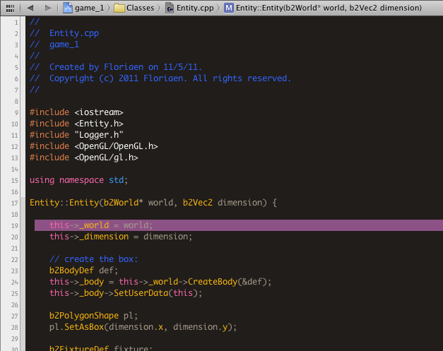

Xcode 4 theme
this is a portage of the TextMate Theme by Zachary Johnson
Instructions:
- First download the theme here
- Then, unzip into the ~/Library/Developer/Xcode/UserData/FontAndColorThemes directory
Here is a screenshot of the theme in action
